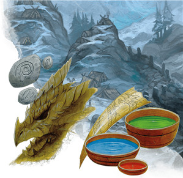
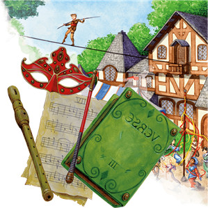
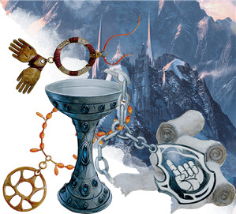
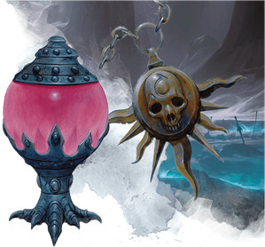
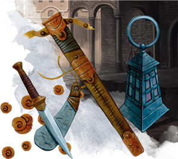
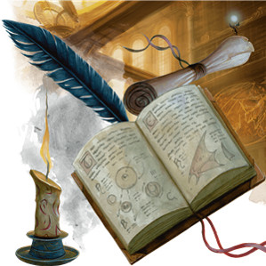
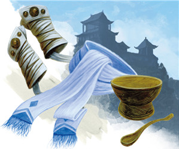
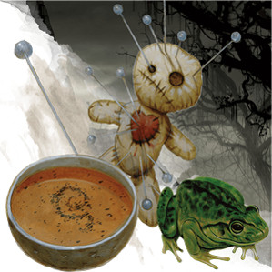
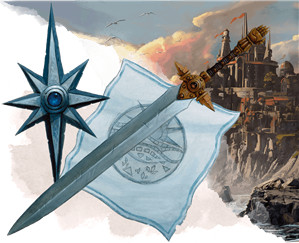
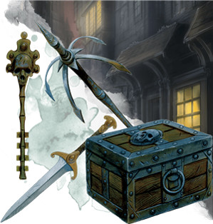

Les classes de D&D 5 pour les nuls
L'une des premières choses à faire lors de la création d'un personnage pour D&D est le choix de sa classe. Celle-ci aide à déterminer le rôle de votre personnage au sein d'un groupe d'aventuriers. Chaque classe a des capacités uniques. Les barbares sont des combattants au corps à corps qui peuvent infliger de gros dégâts, tandis que les druides sont des lanceurs de sorts amoureux de la nature qui peuvent se transformer en animaux et contrôler le champ de bataille.
Vous trouverez ci-dessous un aperçu rapide de chacune des classes disponibles, avec leurs avantages et leurs inconvénients, afin de pouvoir prendre une décision éclairée.
Barbare
Le barbare est la classe parfaite pour ceux qui aiment se lancer au cœur du danger et se jeter sur les ennemis pour leur infliger de gros dégâts. Ils ont accès à la Rage, qui leur permet d'infliger des dégâts supplémentaires avec des attaques au corps à corps, tout en subissant des dégâts réduits de sources de dégâts courantes. C'est une classe de hack & slash relativement simple, ce qui la rend parfaite pour de nouveaux joueurs à D&D.
Avantages
- Le Dé de vie le plus élevé du jeu, ce qui donne des points de vie supérieurs à la moyenne.
- Peut infliger et subir beaucoup de dégâts, grâce à la Rage.
- La capacité Attaque téméraire vous aide à effectuer des attaques de manière plus efficace mais vous rend plus facile à toucher.
Inconvénients
- Une classe d'armure (CA) généralement inférieure à celle du guerrier et du paladin, car vous ne pouvez pas porter d'armure lourde et utiliser la Rage.
- Peu de capacités qui servent hors combat.
- Peut être considéré comme trop simple par certains joueurs.
En savoir plus : le barbare pour les nuls
Barde
Les bardes utilisent les arts pour alimenter leur magie et soutenir leurs alliés sur le champ de bataille. Grâce à leur capacité Touche-à-tout, ils peuvent être bons à presque tous les jets de caractéristique que vous devrez effectuer. Leur sélection de sorts est limitée jusqu'à ce que vous obteniez des Secrets magiques, ce qui vous permettra d'apprendre deux sorts de n'importe quelle classe. Dans l'ensemble, le barde est génial si vous aimez aider vos amis à réussir, au combat et hors combat, et parler avec des personnages non-joueurs (PNJ).
Avantages
- L'Inspiration bardique donne aux alliés des dés supplémentaires à ajouter aux jets d'attaque et aux jets de caractéristique.
- Entre Touche-à-tout, Expertise et les capacités offertes par les sous-classes, le barde vous permet d'être doué dans de nombreuses compétences.
- De nombreuses options de sorts vous permettent de tromper, de déranger ou de perturber les ennemis et les PNJ.
Inconvénients
- Se prête à un style de jeu de soutien, car seuls ils ne sont généralement pas forts au combat.
- Faible sélection de sorts orientés dégâts.
- En dehors des combats, vous devez vous engager activement avec les PNJ et le monde qui vous entoure pour utiliser les nombreuses compétences dans lesquelles vous excellez.
En savoir plus : le barde pour les nuls
Clerc
Ne négligez pas le clerc. Bien qu'ils fassent des guérisseurs incroyables, ils ont une liste de sorts flexible et un large éventail de sous-classes qui leur permettent d'assumer à peu près n'importe quel rôle dans un groupe d'aventuriers. Vous voulez détruire vos ennemis avec un marteau de guerre, soigner et renforcer vos alliés, ou simplement lancer des sorts destructeurs à distance ? Le clerc peut le faire.
Avantages
- Liste de sorts flexible qui permet de soigner vos alliés et de faire souffrir vos ennemis.
- Vous préparez des sorts chaque jour, ce qui vous permet de planifier les défis de la journée.
- Peut être inestimable face aux morts-vivants.
Inconvénients
- Certains groupes d'aventuriers peuvent s'attendre à ce que vous donniez la priorité à la guérison.
- Une forte dépendance aux sorts signifie qu'une fois que vous n'aurez plus d'emplacements de sorts, vous aurez des options limitées pour affronter des ennemis.
En savoir plus : le clerc pour les nuls
Druide
 Les druides tirent leur magie de la nature elle-même et disposent d'excellentes options pour la création de personnages. Vous pouvez tout baser sur Forme sauvage, qui vous permet de vous transformer en bête ; vous pouvez jouer le soutien et soigner vos alliés ; ou vous pouvez vous concentrer sur le contrôle du champ de bataille en lançant des sorts comme enchevêtrement.
Les druides tirent leur magie de la nature elle-même et disposent d'excellentes options pour la création de personnages. Vous pouvez tout baser sur Forme sauvage, qui vous permet de vous transformer en bête ; vous pouvez jouer le soutien et soigner vos alliés ; ou vous pouvez vous concentrer sur le contrôle du champ de bataille en lançant des sorts comme enchevêtrement.
L'un des plus grands inconvénients de cette classe est que vous devrez garder une trace de vos sorts et des statistiques de vos Formes sauvages et des créatures que vous invoquez. Si vous ne le faites pas, vous pourriez ralentir le déroulement du jeu.
Avantages
- Incantations et Forme sauvage fournissent des outils pour la plupart des situations.
- Échangez vos sorts au début de chaque journée d'aventure.
- Forme sauvage s'améliore au fur et à mesure que vous montez de niveau, surtout si vous optez pour le Cercle de la lune comme sous-classe.
- Les sous-classes sont très spécialisées et permettent à chacun de se sentir unique.
Inconvénients
- Ce n'est pas une classe adaptée aux débutants, car le suivi des sorts et de plusieurs feuilles de statistiques peut être compliqué.
- Aux niveaux intermédiaires, métamorphose offre des avantages similaires à Forme sauvage.
En savoir plus : le druide pour les nuls
Ensorceleur
Les ensorceleurs sont des personnages pour qui la magie leur vient naturellement. Dans la plupart des cas, la lignée d'un ensorceleur est liée à une entité, comme un être céleste ou un fiélon. Ils obtiennent un nombre limité de sorts mais peuvent les modifier à l'aide de leur capacité principale, la métamagie. Cette capacité de classe leur permet de modifier les sorts de diverses manières, notamment en augmentant leur portée, en les rendant difficiles à détecter ou simplement en leur donnant plus de punch. Ils utilisent la métamagie en utilisant des points de sorcellerie.
Avantages
- Plus accessible que le magicien, tout en ayant une mécanique unique avec la métamagie.
- La métamagie ajoute de la flexibilité aux sorts que vous connaissez.
- Peut utiliser des points de sorcellerie pour récupérer des emplacements de sorts, ou utiliser des emplacements de sorts pour récupérer des points de sorcellerie.
- S'appuie sur le Charisme, une excellente caractéristique pour le jeu de rôle.
Inconvénients
- Le nombre limité de sorts que vous apprendrez signifie que vous serez un lanceur de sorts spécialisé.
- À égalité avec le magicien pour le Dé de vie le plus faible.
- Le Tasha's Cauldron of Everything propose un don qui permet aux autres classes d'avoir une forme de métamagie, ce qui enlève le caractère unique de la classe.
En savoir plus : l'ensorceleur pour les nuls
Guerrier
Il y a deux raisons principales pour lesquelles le guerrier est l'une des classes les plus populaires de D&D : il est facile à prendre en main et il est efficace. Votre sélection de sous-classes dans le Manuel des Joueurs vous permet de créer la légende guerrière de vos rêves : un chevalier monté, un archer mortel, un hybride guerrier-lanceur de sorts ou autres.
Avantages
- Facile à apprendre et efficace au combat.
- Maîtrise toutes les armures, les boucliers, les armes courantes et les armes de guerre.
- Possède le plus d'Amélioration de caractéristiques de toutes les classes, permettant des valeurs élevées.
- Gagne une action supplémentaire lors de son tour (une fois par repos court ou long) avec la capacité très convoitée de Fougue.
Inconvénients
- Faible utilité en dehors des combats.
- De la même manière que le barbare, pourrait être considéré comme trop simple par certains joueurs.
En savoir plus : le guerrier pour les nuls
Magicien
Les magiciens sont les lanceurs de sorts emblématiques de D&D. Ils ont le plus grand choix de sorts disponibles et ont de nombreuses spécialisations qui leur permettent de se concentrer soit sur une école de magie en particulier, soit sur une facette particulière de l'incantation. Avec une vaste gamme de sorts et une grande variété de sous-classes, les magiciens sont l'une des classes les plus flexibles et les plus avancées du jeu.
Avantages
- Le plus grand choix de sorts parmi lesquels choisir.
- Peut apprendre des sorts à partir de parchemins et d'autres grimoires de magiciens.
- Incroyablement flexible, quelle que soit la spécialisation.
Inconvénients
- Est quelque peu limité lors des premiers niveaux de jeu.
- Le Dé de vie le plus faible, avec l'ensorceleur.
- Préparez-vous à une paralysie décisionnelle lorsque vous devez sélectionner les sorts à apprendre et à préparer.
- Apprendre de nouveaux sorts pour cette classe est une entreprise coûteuse, alors soyez prêt à dépenser une grande partie de votre or durement gagné pour acquérir de nouveaux sorts.
En savoir plus : le magicien pour les nuls
Moine
Le moine est la classe parfaite pour ceux qui cherchent à canaliser leur maîtrise des arts martiaux. Ils utilisent des points ki pour obtenir des attaques supplémentaires via Déluge de coups, une vitesse de déplacement supplémentaire via Déplacement aérien, et plus encore. Ils sont d'une grande utilité au combat et d'une grande maniabilité. Leur capacité emblématique est Frappe étourdissante, qui vous permet d'étourdir des ennemis.
Avantages
- Peut attaquer plusieurs fois et lancer beaucoup de dés.
- Les points ki offrent des options offensives, défensives, de mobilité et utilitaires.
- Les valeurs de caractéristiques préférées du moine (Dextérité et Sagesse) sont des jets de sauvegarde courants.
Inconvénients
- Les attaques font de faibles quantités de dégâts pour compenser leur nombre.
- Faible santé pour une classe de première ligne, car elle se concentre sur comment éviter les dégâts plutôt que d'agir comme un protecteur.
- Dépend de plusieurs valeurs de caractéristiques pour utiliser efficacement toutes les capacités.
- On dépense rapidement les points ki en raison des nombreuses capacités de classe qui en dépendent.
En savoir plus : le moine pour les nuls
Occultiste
En concluant un accord avec une entité d'un autre monde, les occultistes acquièrent le privilège d'utiliser la magie. Que l'entité soit bienveillante ou sinistre, la création d'un occultiste permet aux joueurs de remplir un type de personnage de type « accord avec le diable ». Ils ont accès à des sorts uniques qu'eux seuls peuvent apprendre. Cela inclut décharge occulte, le meilleur sort mineur du jeu. Les manifestations occultes vous permettent également de personnaliser votre personnage de manière optimale.
Avantages
- Décharge occulte est le meilleur sort mineur destructeur.
- Vous récupérez des emplacements de sorts pendant un repos court (les autres lanceurs de sorts ont besoin d'un repos long).
- Les manifestations occultes sont généralement des renforcements puissants et permanents pour votre personnage.
Inconvénients
- Vous utiliserez probablement beaucoup décharge occulte... comme beaucoup de joueurs.
- Vous avez un très petit nombre d'emplacements de sorts à exploiter.
- Être lié à un patron d'un autre monde peut être une bénédiction ou une malédiction, selon votre MD.
En savoir plus : l'occultiste pour les nuls
Paladin
Les paladins sont des combattants liés par un serment, souvent à une cause divine. Ce sont des protecteurs qui attaquent les ennemis avec leur capacité emblématique Châtiment divin, qui vous permet d'ajouter des dégâts à vos attaques en utilisant des emplacements de sorts. La classe propose également des soins via Imposition des mains. Les paladins sont comme un point intermédiaire entre un guerrier et un clerc, et sont parfaits pour les joueurs qui veulent enfiler une armure lourde, infliger de gros dégâts et apporter un peu d'aide aux alliés.
Avantages
- Maîtrise toutes les armures, les boucliers, les armes courantes et les armes de guerre.
- Châtiment divin permet d'ajouter des dégâts après avoir touché, pas forcément avant.
- Particulièrement efficace contre les morts-vivants.
- Incantation ajoute une utilité supplémentaire à une classe autrement axée sur le combat.
Inconvénients
- Châtiment divin ne peut être utilisé que lors d'attaques au corps à corps et dépensera rapidement vos emplacements de sorts.
- Doit s'appuyer sur plusieurs valeurs de caractéristiques pour être efficace.
- Votre serment vous enferme dans un certain état d'esprit en termes de jeu de rôle, et le MD peut vous punir pour avoir rompu ce serment.
En savoir plus : le paladin pour les nuls
Rôdeur
RÔDEUR ORIGINAL VS RÉVISÉ
Pour beaucoup, la version de base de la classe de rôdeur dans le Manuel des Joueurs est terne. Les capacités de la classe sont en effet très situationnelles et peuvent ne jamais être utiles selon le style de votre MD.
La classe a de fait été retravaillée sous la forme de capacités optionnelles dans le Tasha's Cauldron of Everything et je vous recommande fortement d'y jeter un œil si vous voulez jouer un rôdeur.
Les rôdeurs sont d'habiles combattants qui voyagent à travers la nature sauvage. Ils traquent et chassent leurs ennemis, et disposent de capacités qui leur permettent de naviguer en toute sécurité dans des régions dangereuses. Ils reçoivent des sorts, et ceux-ci les aident à vaincre leurs ennemis ou simplement à se lier d'amitié avec des créatures. Alors que la plupart des joueurs peuvent imaginer un rôdeur comme quelqu'un qui tire sur ses ennemis avec un arc, il peut également se rapprocher et combattre au corps à corps.
Avantages
- Classe axée sur le combat avec un penchant pour la nature.
- Des traits et des compétences forts pour l'exploration.
- Les sorts vous permettent d'avoir plus de polyvalence que certaines autres classes martiales.
- Peut avoir un animal de compagnie.
Inconvénients
- Les sous-classes du Manuel des Joueurs sont généralement plus faibles que celles publiées par la suite.
- Si vous voulez systématiquement faire de bons dégâts, vous pourriez lancer Marque du chasseur encore et encore.
- Sans utiliser les capacités optionnelles du Tasha's Cauldron of Everything (voir encadré), de nombreuses capacités déterminantes du rôdeur sont très situationnelles.
En savoir plus : le rôdeur pour les nuls
Roublard
Le roublard est la première classe discrète de D&D. La capacité Attaque sournoise vous permet d'infliger d'énormes quantités de dégâts, et Ruse vous permet d'utiliser l'action Foncer, Se désengager ou Se cacher en tant qu'action bonus, vous offrant ainsi une grande maniabilité au combat. Si vous aimez vous faufiler, crocheter des serrures, voler des trésors et assassiner vos ennemis, le voleur est fait pour vous.
Avantages
- Attaque sournoise inflige des dégâts élevés sur une seule cible.
- Ruse donne une utilisation polyvalente de votre action bonus à chaque tour.
- Vous gagnez beaucoup de maîtrises ainsi qu'Expertise pour les jets de caractéristique.
Inconvénients
- Pas d'attaque supplémentaire comme capacité de classe comme en ont la plupart des autres classes martiales.
- Dépend de l'activation d'Attaque sournoise pour infliger des dégâts au combat.
- Difficile d'utiliser les jets de Dextérité (Discrétion) si les autres membres du groupe aiment entrer dans le tas rapidement.
En savoir plus : le roublard pour les nuls
Artificier
NOUVELLE CLASSE
L'artificier n'apparaît pas dans le Manuel des Joueurs. Il a été ajouté au jeu dans Eberron: Rising From the Last War, et a ensuite été réimprimé dans Tasha's Cauldron of Everything.
La classe la plus récente du jeu est l'artificier. Cette classe est parfaite pour ceux qui aiment bricoler. Les artificiers ont la capacité d'imprégner des objets avec des propriétés magiques, ainsi que de créer leurs propres objets magiques. Pour compléter cela, ils ont accès à une sélection limitée de sorts et de sous-classes qui vous permettent d'assumer n'importe quel rôle, que ce soit pour infliger des dégâts ou pour jouer un rôle de soutien.
Avantages
- Peut imprégner des objets avec des propriétés magiques ou fabriquer des objets magiques à partir d'une liste sélectionnée d'objets.
- Compétent dans bon nombre d'outils du jeu.
- Hautement personnalisable et efficace, quel que soit le rôle que vous voulez jouer.
Inconvénients
- Nombre limité d'objets que vous pouvez imprégner.
- Difficile dans le sens où vous avez besoin d'une bonne compréhension de tous les éléments et de toutes les options qui s'offrent à vous.
- Si votre MD fait pleuvoir les objets magiques dans sa campagne, votre valeur peut diminuer.
Basé sur un article de Bryce Miller Booker, traduit par blueace